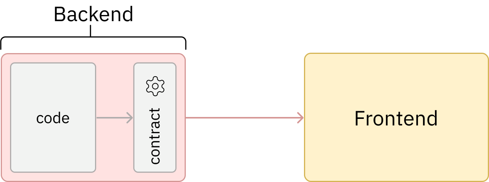
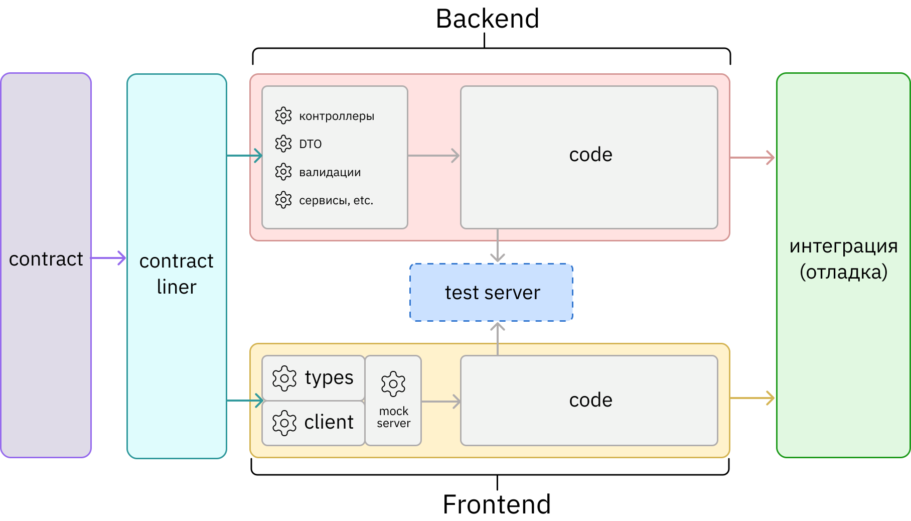
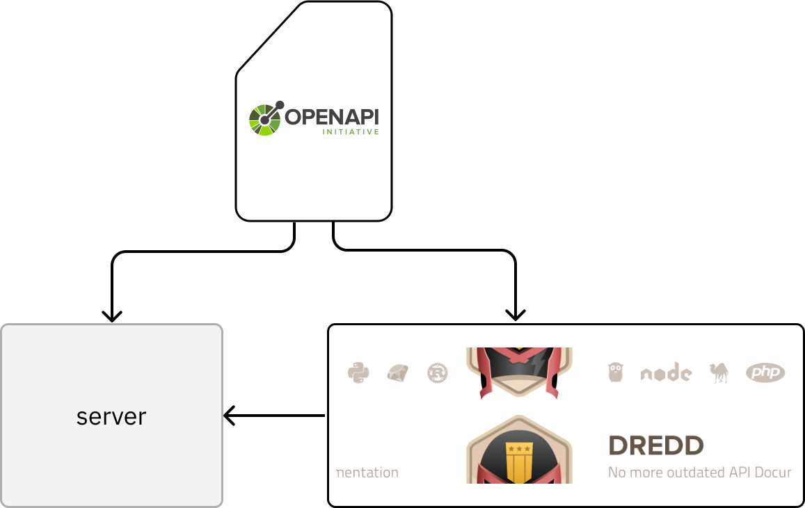

Иван Поддубный, CTO Вебпрактик
Контракт — это формальное соглашение или спецификация, которое определяет, как клиент и сервер должны взаимодействовать между собой
Должен быть
машиночитаемым!

От хаотичного интервью до API-спецификации за 15 минут: автоматизация работы аналитика с Roo Code


| Кейс | CodeFirst | ContractFirst |
|---|---|---|
| Проблема неактуальной документации | Решено | Решено |
| Проблема недостаточной полноты описания контрактов | Частично | Решено |
| Потери эффективности на согласовании контрактов | Частично | Решено |
| Поддержка качества контрактов (соблюдение стандартов и лучших практик) |
Частично | Решено |
| Блокеры процессов из-за задержки поставки контракта | Решено | Решено |
| Блокеры процессов из-за зависимости клиентов и QA от тестовых контуров | Решено | Решено |
| Несоответствие реализации контрактам | Решено | Решено |
| Проблемы тестирования контрактов | Частично | Решено |
| Возможности автоматизации | Средние | Большие |
| AI Driven | Меньше | Больше |
Если понравился доклад поставь, пожалуйста, наклеечку (#144)